Today was the first TV press conference of landed operations of
Phoenix that I did not directly participate in. I helped way before
hand, but didn't do anything for it in the last few days.
The SSV team produced a nice new animation of the sample delivery to
TEGA of the material with ice. I'm still helping by converting RKSML
arm motion to Lightwave scene files with keyframes (.lws)...
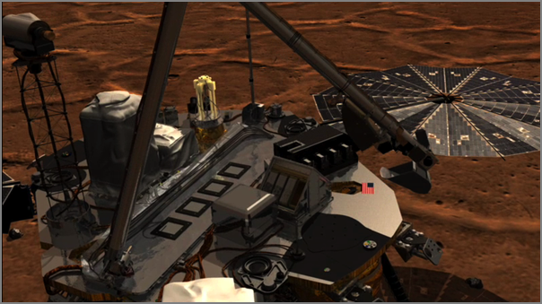
Then the SSV team created a new computer model of a TEGA cell and did
a blend with the lander.
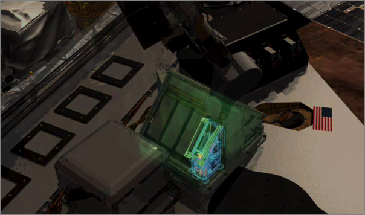
Here is a closeup showing one TEGA cell.
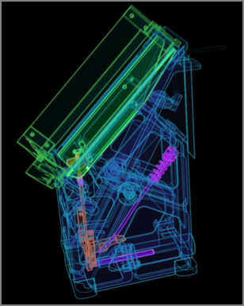
Then here is the sample being vibrated down into the sample holder.
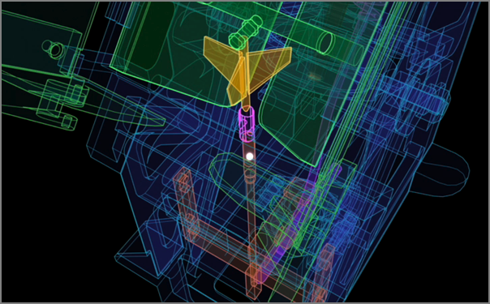
For the full details, get the movie from here and/or watch the whole
press conference when it becomes available on iTunesU.
...
The project has accelerated the development of a new web language,
Geoscience Mark-up Language, to allow countries to share their data
and make them freely accessible. The collaboration hopes that this
will make mineral extraction opportunities easier to spot, which has
made Australia, Brazil and Canada particularly keen to participate,
says Jackson.
...
Hmmm... Not seeing detail useage instructions and the site does not
like Firefox 3. The FAQ section could really use a section pointing
potential *users* of said data to some instructions.
...
"It's like living beside a train track. After a while you stop hearing
the trains go by," said Angelia Vanderlaan, a doctoral candidate in
oceanography at Dalhousie University in Nova Scotia. Since the whales
were not budging, Vanderlaan and other marine mammal experts designed
a plan to encourage cargo ships to take a short detour around them
during certain months of the year.
...
While the ATBA is a voluntary plan, the Dalhousie scientists can
monitor on their computers which ships are complying and which ones
are ignoring the zone. Through technology called the Automatic
Identification System, ocean vessels transmit their speed, direction
and type of ship every three seconds. The telecommunications company
Bell Aliant donated and installed special equipment on cell towers
near Cape Sable Island to help the researchers track activity in the
ATBA.
...
"Subsequent to 31 May 2008, we have very clear evidence that several
vessels that used to transit the ATBA are now voluntarily avoiding the
area. This is a very good sign," said Dalhousie oceanography professor
Christopher Taggart.
...
...
Their research is having an international as well as local impact. The
paper, "Vessel Collisions with Whales: The Probability of Lethal
Injury Based on Vessel Speed," by Ms. Vanderlaan and Dr. Taggart, was
published in Marine Mammal Science earlier this year and is being
cited in a court case in Hawaii concerning a high-speed ferry and
potential humpback whale strikes. Their work is also being used to
mediate a dispute between the National Oceanic and Atmospheric
Administration (NOAA) and the White House regarding vessel speed in
certain areas of the American east coast.
...
Alice 3.0 sounds pretty interesting and maybe it will run on Linux
and/or Mac. I was excited that the original Alice used Python, but it
was always just windows based, so I never tried it and I missed out
seeing that the Building Virtual Worlds class at CMU did when I was a
Visiting Scientist there back in 98/99.
EA's
Hit Game 'The Sims' Will Help Make Computer Science Education Fun
PITTSBURGH - March 10, 2006 - Carnegie Mellon University has entered
into a groundbreaking collaboration with Electronic Arts Inc., that
has the potential to revolutionize and reinvigorate computer science
education in the US from middle school through senior high and beyond.
.
EA has agreed to help underwrite the development of Alice 3.0 - a
popular, object-oriented, Java-based computer-programming environment
created by Carnegie Mellon researchers - and provide essential arts
assets from "The Sims" - the best selling PC video game of all time.
.
The Sims content will transform the Alice software from a crude, 3D
programming tool into a compelling and user-friendly programming
environment. Development for Alice 3.0 will begin immediately and will
span the next 18 to 24 months. Experts say that when the
transformation is complete, the new programming environment will be in
position to become the national standard for teaching software
programming.
...
Val Schmidt's Master's Thesis Defense - Underwater tracking of
humpback whales with high frequency pingers and acoustic recording
tags Friday, August 1, 2008 at 10:00am in the Visualization Classroom
room 130, within the Chase OE Laboratory.
A long-baseline acoustic system has been developed for the tracking of
humpback whales that have been tagged with digital acoustic recording
devices, or DTAGs, providing quantitative measures of submerged whale
behavior. The system includes three acoustic sources deployed from
small-boats that follow the whale after the animal has been
tagged. Integrated GPS provides positioning and synchronized operation
of the sources. Time-encoded signals from the sources are recorded
along with whale vocalizations and ambient noise on the whale
tag. Time-of-flight measurements, as measured by the tag acoustic
data, are converted to range from the whale to each source with a
nominal sound speed. A non-linear least-squares solution is then
solved for the whale's position. The system is demonstrated with data
collected from a tagged animal in the summer of 2007.
I've done an initial test of the StarDot SC 5MP. I've come to the
conclusion that I need to clean the lens and clean my office window!
First off, I used the video output with a standard def Sony TV monitor
to get the rough focus. SD is a bit tough to do the focus.
Initially, the video would not really sync. Rebooting the netcam got
the video to work just fine. No tripod, so this is blurry...
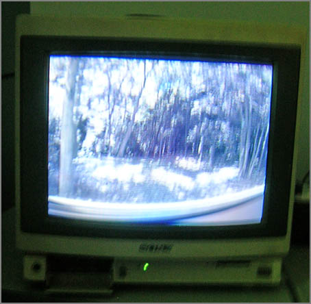
I setup the camera to take the full resolution images through the web interface:
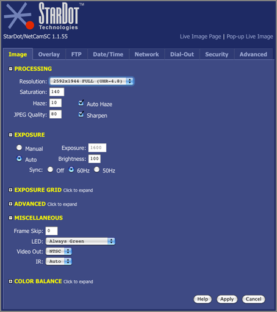
Here are two sample images from the camera. I've downsampled them for
my blog, but they illustrate the blurry image (from not cleaning
everything), and the strong spherical distortion from the wide angle
optics. The results are pretty good. Now I need a ladder and some
Windex.
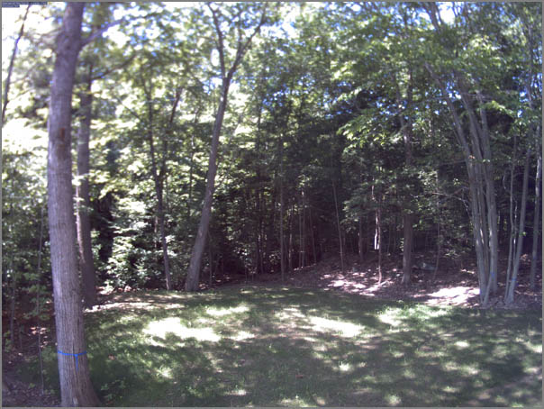
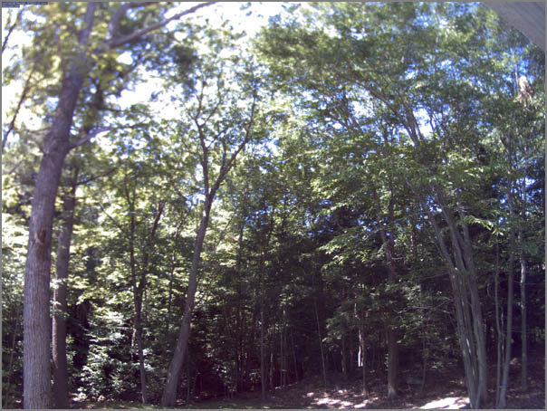
Just a couple notes about the netcam system. It is not strong on
security. You will need to put this behind a NAT or other firewall.
The box runs a stripped down uCLinux with BusyBox:
% sudo nmap -sS -sR -sV -O -PI -PT cam1
PORT STATE SERVICE VERSION
9/tcp open discard
23/tcp open telnet Linux telnetd
80/tcp open http Boa HTTPd 0.93.15
512/tcp open exec
Thanks to Dale C., I was able to grab images with wget for testing:
% watch -n 10 wget http://camera/netcam.jpg
watch will run the wget command every 10 seconds. Pretty simple way
to grab some frames.
Here are the details of an image (just because I can... )
Looks like this has already scrolled off the page as I can't find the
original. From: Maritime
Monday 121
Haight’s Maritime Items has:
USCG may not ignore right whales when designating routing measures -
The US Court of Appeals for the District of Columbia reversed a
decision of the federal District Court that had sanctioned the failure
by the US Coast Guard to consider the impact on the endangered North
Atlantic right whales in its designation of ship routing
schemes. Various environmental advocacy groups had brought suit
against the National Marine Fisheries Service (NMFS) for failure to
issue an emergency rulemaking requiring ship speed reductions in
waters frequented by the right whales and against the Coast Guard for
failure to consider the impact on right whales in its designation of
vessel routing measures under authority of the Ports and Waterways
Safety Act. The District Court had granted motions for summary
judgment in favor of the two agencies. The environmental advocacy
groups appealed. The appellate court found that the failure of the
Coast Guard to consider the impact on right whales in its designation
of vessel routing measures constituted final agency action and was
thus reviewable. It remanded the case to the District Court to review
on the merits the allegations of the environmental advocacy groups
regarding the Coast Guard’s responsibility to consider the impact on
North Atlantic right whales in its designation of vessel routing
measures. Defenders of Wildlife v. Gutierrez, No. 07-5278 (DC Cir.,
July 18, 2008). - Dennis Bryant Holland & Knight homepage
http://pacer.cadc.uscourts.gov/docs/common/opinions/200807/07-5278-1128311.pdf
This weekend, we got to go up to the White Mountains and Franconia.
New Hampshire is a beautiful state, even if the Old Man of
the Mountain collapsed in 2003. The gorge was spectacular and the
Lost River caving was a blast. We made it through all the cave, even
the lemon squeezer. Too much to do and not enough time.
Rob B. has lent me a StarDot
NetCam SC 5MP camera to try out with my new office view. I need to
get this camera up and logging asap. We are building a camera to
mount this inside my window so that no housing is needed.
Several people have noted that I have neglected the garden pictures
this year. Maria and Edwardo did a little planting for me while I was
gone and I did an emergency weeding and planting dash despite the
rain. I've got 5 planters of seeds started for late crops. Fingers
are crossed.
After 56 days straight working on Phoenix without a day off, I'm back
home. I've handed off the 5 projector screen to Jake et al. It looks
like it is going well. Jake here on the right is controlling the big screen via
Apple Remote Desktop via a laptop on wireless.
For listing out series of sols for the Phx mission, seq really is
handy. This little unix program lists a range of numbers. The
mission uses 3 digit numbers for the sol directories.
And a little trick for new macs. If you want to email the serial
number and ethernet MAC address of a new machine to your admin that
is keeping track of hardware (or yourself incase it is stolen), try
this command:
system_profiler -detailLevel basic SPHardwareDataType \
SPNetworkDataType | mail -s "New mac hardware report for `hostname`"
somebody@example.com
I told Gwennie that I would give her a quick SQL tutorial. She is
another mac user (there were many at the Phoenix Sience Operations
Center... probably over 100 Macs at the SOC). So here it is and this
assumes you are running on a Mac and are comfortable on the command
line.
First, the Mac comes with Sqlite3. You can use either the Mac
one or the one from fink. They are pretty much equivalent.
% type -a sqlite3
sqlite3 is /sw/bin/sqlite3
sqlite3 is /usr/bin/sqlite3
Sqlite is a great database program to use when learning SQL. There is
no database server to setup. It uses a file for the database and if
you don't like what you did, just delete the file. Note, that sqlite2
and older use an ASCII database format and are really slow (and have
very large db files). Let's get started!
Not so exciting, but it is a start. You have to specify a file to use
as the database, but if unless you do something to the database, it
won't create the file. SELECT is the basic lookup command.
You can do basic math with it. You can also get the current time.
Some quick SQL convention notes. SQL reserved words are typically
done in all caps and comments start with '--'. SQL statements
end with a ';'.
Now we need to make some tables so we can do something a bit more
interesting. This makes a 3 column table. The .schema command lists
the tables in the database.
sqlite> INSERT INTO somedata values (1, 1.001, "a first string");
sqlite> INSERT INTO somedata values (6, 42.000001, "another string");
sqlite> SELECT * FROM somedata;
1|1.001|a first string
6|42.000001|another string
If you want to write out a csv file that you can import into Excel
or some other database, try something like this:
sqlite> .separator ", "
sqlite> .output foo.csv
sqlite> SELECT aFloat, aString FROM somedata;
sqlite> .quit
% cat foo.csv
1.001, a first string
42.000001, another string
% open .output foo.csv
The next thing to look at is WHERE to limit searches to a
subset of the data.
Hello GMT users-
.
GMT quietly passed a major milestone sometime earlier this month. 20
years ago (in early July 1988), Walter and I released GMT version 1.0
to an unsuspecting group of students and scientists at Lamont-Doherty
Earth Observatory. The first years GMT was used mostly at Lamont but
slowly migrated to other places as graduating students and various
visitors took 9-track tapes with them to their new institutions.
.
The official global launch of GMT did not take place until October 8,
1991 with our EOS article; hence we will hold off on the wild parties,
logo competitions, and other nerd trivia until we get closer to the
official 20-year anniversary in 2011. Stay tuned!
.
Cheers,
Paul Wessel, Walter Smith, and the GMT team
Apple's iTunes on the Mac does not play ogg?!?! I'm having to run
Audacity to play a podcast.
Also, the UNH IT team says that their VPN is not compatible with that
in Mac OSX 10.5.
To the best of my understanding the Mac built in VPN will work with
generic PPTP VPNs or a Mac server IPSec VPN. What we run on campus is a
Juniper SSL VPN. The Mac's built in VPN software will not connect to
it. It needs to connect via the web Browser.
This big move to Browser RAS does not thrill me.
And the UNH travel expense Excel spreadsheet does not seem to be
compatible with MS Office 2008 for Mac.
Have you ever wanted the ability to hide the Dock and/or the menu bar
on an application-by-application basis? That is, when you launch
iPhoto, the Dock is hidden, when you launch Google Earth both the Dock
and the menu bar are hidden? This can be useful when working on a
smaller screen with a program that requires most of the screen for its
visuals, or if you just find the Dock and menu bar are cluttering your
view of things.
.
While there are a number of third-party programs out that purport to
do just this- ASM and MenuShade come to mind - it's actually quite easy
to do yourself. It just takes a couple of simple edits in one file
within the given application.
...
I made a copy of the Stickies application on my desktop.
% cd ~/Desktop/StickiesCopy.app/Contents
% emacs -nw Info.plist
I'm not sure what this means yet. All caps as the USCG sends its
announcements. Note to the USCG: Putting URLs in ALL CAPS is not
going to work. Most web servers are case sensitive on the text after
the host name.
SUBJ: INTERRUPTION TO RASTER NAVIGATIONAL CHART (RNC) DISTRIBUTION
A. COAST GUARD NAVIGATION STANDARDS MANUAL, COMDTINST M3530.2
(SERIES)
1. THE NATIONAL OCEANIC AND ATMOSPHERIC ADMINISTRATION (NOAA) HAS
ADVISED THE COAST GUARD THAT AS OF 15 JUNE 2008 THERE IS A
TEMPORARY INTERRUPTION TO THE STANDARD DISTRIBUTION OF RNC UPDATES
AND NOTICE TO MARINERS. THIS INTERRUPTION COULD LAST UP TO TWELVE
MONTHS. NOAA IS IN THE PROCESS OF UPGRADING THEIR CHART PRODUCTION
SYSTEM AND DECREASING THEIR RELIANCE ON THIRD-PARTY DISTRIBUTORS.
2. AS DISCUSSED IN REF A, THERE ARE FIVE TYPES OF CHART DATA
AUTHORIZED FOR COAST GUARD USE. THE ONLY DATA IMPACTED BY THIS
INTERRUPTION OF SERVICE IS RNC WHICH WILL AFFECT THE US EAST COAST,
US WEST COAST, US GULF COAST AND GREAT LAKES REGIONS. C2CEN HAS
DETERMINED THAT THE FOLLOWING COAST GUARD NAVIGATION SYSTEMS AND
CUTTER CLASSES ARE HEAVILY DEPENDENT ON RNC DATA:
A. COMDAC-INS (WMSL/WHEC/WMEC/WPB-110)
B. CAPN VOYAGER (WHEC/WMEC/WPB-110/WLIC/WLI/WYTL/EAGLE/BUSL-49)
C. VOYAGE MANAGEMENT SYSTEM (VMS) (WPC-179)
3. OUR CURRENT STANDARD IN REF A STATES THAT ELECTRONIC CHART DATA
IS CONSIDERED UP-TO-DATE IF IT HAS BEEN CORRECTED WITHIN THE LAST
FORTY-FIVE DAYS. CURRENT RNCS DISTRIBUTED BY MAPTECH WILL PROVIDE
CUTTERS WITH UP-TO-DATE CHARTS THROUGH JULY 2008.
4. NOAA OFFICIAL ELECTRONIC NAVIGATION CHARTS (ENC) ARE THE MOST
UP-TO-DATE ELECTRONIC CHARTS AVAILABLE AND ARE THE PREFERRED CHART
BASED ON THE HIERARCHY DISCUSSED IN REF A. ENC CHARTS AND UPDATES
ARE AVAILABLE FOR FREE DOWNLOAD AT
HTTP://NAUTICALCHARTS.NOAA.GOV/MCD/ENC/INDEX.HTM.
...
The U.S. Department of Homeland Security has agreed to lift the
designation of some foreign graduate students in oceanography as a
security threat. The designation prevented the students, enrolled at
the Massachusetts Institute of Technology, many from countries
considered close U.S. allies, from doing certain research work in
harbors. While officials at MIT and other universities have called the
designations absurd, the government didn't lift them until asked to do
so by Rep. Brad Miller, chair of the Investigation and Oversight
Subcommittee of the House Science and Technology Committee. Miller
released various letters on the matter, praising the lifting of the
classification and calling on the government to take steps to avoid
hindering graduate students in similar situations.
The Pentagon has issued a policy statement that contracts for research
with universities should not generally have restrictions on
disseminating research findings unless the research is classified.
...
Now we need to keep some sense as to what is classified vrs unclassified.
I've experience people putting unclass data on the class networks expecting
me to get it from there. Um, no!
...
Carrying the 170 workers of Caldive, the global sea drilling company
from Quincy, the live-on construction barge Lone Star Horizon is now
in position for the project. It was towed out Tuesday night for Suez
Energy North America, according to company spokeswoman Carol
Churchill.
.
The site of the terminal - named Neptune - was challenged by the
fishing community, which objected to the loss of fruitful waters to
the energy industry, but then-Gov. Mitt Romney authorized the LNG
terminal on the site in December 2006. He also approved a second
terminal site to the south that has been built and began receiving the
tankers last month.
.
The Neptune site will consist of a buoy system at which the LNG
vessels will moor and discharge natural gas by using onboard
vaporization equipment, according to Suez Energy. The natural gas will
be transported via a 13-mile pipeline connecting to the existing
pipelines through Salem.
...
...
Neptune will implement vessel restrictions, including:
* Speed restrictions to avoid striking marine mammals and sea turtles;
* Downward lighting to minimize light attracting sea birds at night; and
* Vessel shutdowns in the event of a marine mammal sighting.
During construction, two marine mammal observers (MMOs) are on duty on
each construction vessel 24 hours a day, seven days a week, to
visually monitor for the presence of marine mammals and sea
turtles. At night, the MMOs use infrared scanning devices to monitor
for the presence of marine mammals and sea turtles in the construction
area. In addition to visual observations, Neptune has installed a
series of acoustic buoys in the construction area that automatically
monitor for the presence of the endangered North Atlantic right
whale. If a right whale is detected, the MMOs are notified
immediately, and vessels will be placed on heightened alert.
...
I've headed away from the Phoenix project and am now back in the world
of NOAA. However, I am still paying attention to the mission.
Phoenix is a fantastic mission from a science perspective.
...
After receiving instructions for a movement that would have damaged
its wrist, the robotic arm recognized the problem, tried to rectify it
and then shut down before it could damage itself, according to Ray
Arvidson, a co-investigator for the Mars Lander's robotic arm team and
a professor at Washington University in St. Louis.
.
NASA engineers yesterday worked to send new instructions to the Lander
so the robotic arm would come back to life and proceed with a new set
of instructions. The team is now waiting to see whether the code
resolved he problem.
...
After my little exploration into tides I need to read up on tides.
NOAA has an online course. This is a quick overview that will help
people get at least the basics.
Hatch, L., C. Clark, R. Merrick, S. Van Parijs, D. Ponirakis,
K. Schwehr, M. Thompson, D. Wiley, Characterizing the Relative
Contributions of Large Vessels to Total Ocean Noise Fields: A Case
Study Using the Gerry E. Studds Stellwagen Bank National Marine
Sanctuary, Environmental Management, May 2008.
In 2006, we used the U.S. Coast Guard's Automatic Identification
System (AIS) to describe patterns of large commercial ship traffic
within a U.S. National Marine Sanctuary located off the coast of
Massachusetts. We found that 541 large commercial vessels transited
the greater sanctuary 3413 times during the year. Cargo ships,
tankers, and tug/tows constituted 78% of the vessels and 82% of the
total transits. Cargo ships, tankers, and cruise ships predominantly
used the designated Boston Traffic Separation Scheme, while tug/tow
traffic was concentrated in the western and northern portions of the
sanctuary. We combined AIS data with low-frequency acoustic data from
an array of nine autonomous recording units analyzed for 2 months in
2006. Analysis of received sound levels (10-1000 Hz, root-mean-square
pressure re 1 lPa ± SE) averaged 119.5 +/- 0.3 dB at high-traffic
locations. Hightraffic locations experienced double the acoustic power
of less trafficked locations for the majority of the time period
analyzed. Average source level estimates (71-141 Hz, rootmean- square
pressure re 1 lPa ± SE) for individual vessels ranged from 158 ± 2 dB
(research vessel) to 186 +/- 2 dB (oil tanker). Tankers were estimated
to contribute 2 times more acoustic power to the region than cargo
ships, and more than 100 times more than research vessels. Our results
indicate that noise produced by large commercial vessels was at levels
and within frequencies that warrant concern among managers regarding
the ability of endangered whales to maintain acoustic contact within
greater sanctuary waters.
...
Neptune, which is owned by parent company Suez Energy, is building a
deepwater port approximately 10 miles off the coast of Gloucester. It
will consist of a buoy system where LNG vessels will moor and
discharge natural gas by using onboard vaporization equipment. The
13-mile-long sub-sea pipeline that will cross into 0.36 miles of state
waters under Marblehead's jurisdiction will be used to tie into the
existing Spectra Energy pipeline system's HubLine, which will deliver
the natural gas to consumers in Massachusetts and throughout New
England.
...
...
Scientists have totally different goals for their data. As much as we
love the images from spacecraft, the cameras are not there to send us
pretty pictures. They are there to send us data. Each pixel in an
image is a number, a measurement of how many photons of a certain
wavelength range of light reached the camera detector. When scientists
process images, they are very, very careful about what they do with
those numbers. What the amateurs do to blend images together -- to a
scientist, that's fudging the data. Not that the scientists dislike
what the amateurs do -- in fact I have seen in many operations
facilities where science teams have printed out the image products
produced by amateurs and posted them on their walls!
...
...
* The Mission Success Panorama is, as of this morning, complete --
that is, all the data bits are on Earth. Work still remains to
assemble it, and Mark has some ideas for things he'd like to shoot
again to improve it, but we can now assemble a full, 360-degree
panorama of all of Mars that Phoenix can see in full color.
* A tiny sample was delivered to the Optical Microscope on sol 38
("tiny" was what they requested). They had to wait a couple of sols
for the wet chemistry lab to be ready (done with its first
analysis), and then delivered everything else that was in the scoop
to the wet chemistry lab on sol 41. Mark says that delivery was
"perfect."
* The Thermal and Electrical Conductivity Probe (TECP) on the robotic
arm finally touched soil on sol 43. The team is "excited to finally
have that in play."
...
I don't believe that Phx has rasped yet other than to do
sprinkles... so I don't think this is right (at least not quite yet)
...
Phoenix also was commanded to rotate the scoop into a third position -
this time to place the drill-like rasp on the backside of the scoop
against the ice. The rasp, just like an ice carver would use on Earth,
then rotated several times per minute to scrape additional shavings
out of the ice. The arm was then commanded to heap the scrapings into
piles, each with 10-20 cu. cm. of ice mixed in with the soil. This
equates to between two and four teaspoonfuls of ice in each pile.
...
...
or the past day, Phoenix has been using its robotic arm to scrape away
at a hard icy surface on the red planet, trying to claw enough dirt
out to pour into its onboard instrument. So far, it has only
accumulated small piles of shavings, which it has not been able to
scoop into the oven.
...
Today we did another presentation on the big screen for a group of
technical people visit the SOC here in Tucson. I sit in the back
running Apple Remote Desktop (ard) to a 8 core intel mac with three
ATI Radeon HD 2600 XT graphics cards with 256MB of VRAM each. I
am definitely not pushing these cards the slightest with my series
of still images.
Activity EN-2.3: Integrate additional automated monitoring systems and
ship reporting systems for all vessels transiting the Monument.
.
Existing automated monitoring / ship reporting systems will be
utilized for vessels transiting the monument and that are so
equipped. Many "larger" vessels are required to carry and utilize
Automated Identification Systems (AIS). As mandated through the
Maritime Transportation Security Act (MTSA), the use of Automatic
Identification Systems (AIS) is required on all commercial vessels
greater than 65-feet. As USCG and Naval researchers develop and expand
the systems to collect, manage (sort) and distribute this information
through shore based and satellite technologies, its use will be an
effective tool to monitor ship traffic within and around the monument.
Does the following mean AIS, LRIT, or what?
* 404.5 Requirements for a vessel monitoring system.
.
(a) Requirement for use. Effective August 28, 2006, an owner or
operator of a vessel that has been issued a permit for accessing the
Monument must ensure that such vessel has an OLE approved, operating
VMS on board when voyaging within the Monument. An operating VMS
includes an operating mobile transmitting unit on the vessel and a
functioning communication link between the unit and OLE as provided by
an OLEapproved communication service provider. Appendix B to this part
404 provides information regarding OLEapproved transmitting units.
(b) Installing and activating the VMS. Only a VMS that has been
approved by OLE may be used. When installing and activating the
OLE-approved VMS, or when reinstalling and reactivating such VMS, the
vessel owner or operator must:
.
(1) Follow procedures indicated on an installation and activation
checklist, which is available from OLE; and
(2) Submit to OLE a statement certifying compliance with the
checklist, as prescribed on the checklist.
.
(c) Interference with the VMS. No person may interfere with, tamper
with, alter, damage, disable, or impede the operation of the VMS, or
attempt any of the same.
.
(d) Interruption of operation of the VMS. When a vessel's VMS is not
operating properly, the owner or operator must immediately contact
OLE, and follow instructions from that office. If notified by OLE
that a vessel's VMS is not operating properly, the owner and operator
must follow instructions from that office. In either event, such
instructions may include, but are not limited to, manually
communicating to a location designated by OLE the vessel's positions
or returning to port until the VMS is operable.
.
(e) Access to position data. As a condition of authorized access to
the Monument, a vessel owner or operator subject to the requirements
for a VMS in this section must allow OLE, the USCG, and their
authorized officers and designees access to the vessel's position data
obtained from the VMS. Consistent with other applicable laws,
including the limitations on access to, and use of, VMS data collected
under the Magnuson-Stevens Fishery Conservation and Management Act,
the Secretaries may have access to, and use of, collected data for
scientific, statistical, and management purposes.
.
(f) Authority for installation and operation. OLE has authority over
the installation and operation of the VMS unit. OLE may authorize the
connection or order the disconnection of additional equipment,
including a computer, to any VMS unit when deemed appropriate by OLE.
.
(g) Activities Regarding Vessel Monitoring Systems. Effective August
28, 2006, the following activities regarding vessel monitoring systems
are prohibited and thus unlawful for any person to conduct or cause to
be conducted:
.
(1) Operating any vessel within the Monument without an OLE
typeapproved mobile transceiver unit described in this section;
(2) Failing to install, activate, repair, or replace a mobile
transceiver unit prior to leaving port;
(3) Failing to operate and maintain a mobile transceiver unit on board
the vessel at all times as specified in this section;
(4) Tampering with, damaging, destroying, altering, or in any way
distorting, rendering useless, inoperative, ineffective, or inaccurate
the VMS, mobile transceiver unit, or VMS signal required to be
installed on or transmitted by a vessel as specified in this section;
(5) Failing to contact OLE or follow OLE instructions when automatic
position reporting has been interrupted as specified in this section;
(6) Registering a VMS or mobile transceiver unit to more than one
vessel at the same time;
(7) Connecting or leaving connected additional equipment to a VMS unit
or mobile transceiver unit without the prior approval of OLE; and
(8) Making a false statement, oral or written, to an authorized
officer regarding the installation, use, operation, or maintenance of
a VMS unit or mobile transceiver unit or communication service
provider.
This year, I spent the 4th with much of the Phx team up at Jerry's.
Rob and I had a combined birthday. No good fireworks pics this year,
but I did get this of the pool and city lights.
This morning, I paid a visit to the Biosphere 2 build and took the
tour. Here is the typical view of the main room. It's a lot bigger
than I was expecting. This is quite the enigneering feat.
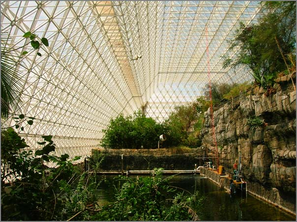
Check out the wild structure that supports the building.
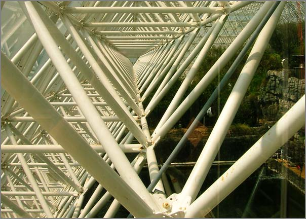
The rain forest is very impressive.
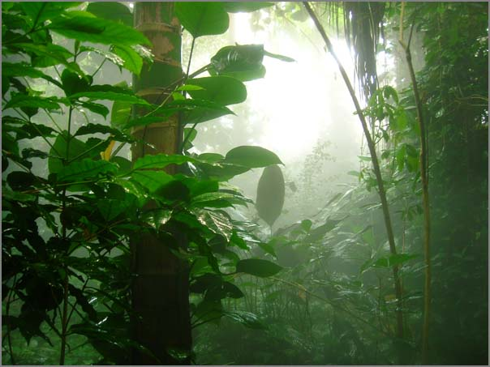
There be monsters outside.
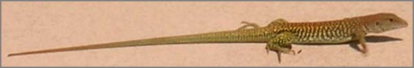
Luckily the biospherians had an airlock to protect them from the outside:
Excellent... I submitted a help request about UNH VNH and the web page gives:
Software error:
1 at /usr/lib/perl5/site_perl/5.8.7/Custom/ARSPerl.pm line 200.
For help, please send mail to the webmaster (root@malachite.unh.edu),
giving this error message and the time and date of the error.
Ouch. Then I went to the service that checks computers on the UNH network
for security vulnerabilities:
Access forbidden!
You don't have permission to access the requested object. It is either
read-protected or not readable by the server.
If you think this is a server error, please contact the webmaster.
Error 403
namespace.unh.edu
A very useful cgi.
Q: Why do I have to pay for my Macintosh client when the Windows client is free?
A: Only because the Windows client is freely distributable. There is
no viable Macintosh product that is free. We are keeping a close eye
on some other Macintosh clients that are still in development. Once
they are released we will assess them and make note on this site if
another alternative exists.
So I have the CISCO client, how do I connect UNH? Sigh.
Stereo pipeline underwater with the USCG Polar Star ice breaker
Just ran into this image on my computer from Alex's paper Mars
Pathfinder Robotics Visualization Applied to Submarine Archaeology
in 1999. The figure suddenly has extra added relevance. First, this
is the oldest publication that I know of that demonstrates 3D model
reconstruction from stereo vision. Second, Alex adapted the very same
stereo pipeline for his project as is now being used on the Phoenix
Mars Lander by the Ames team that I helped start with Eric Z. way back
when. And 3rd is that a group of people from CCOM (including Monica)
will be going on the Healy very soon for arctic multibeam mapping.
The object in the figure is part of one of the propeller shafts on the
Polar Star ice breaker, which is a part of the same fleet.
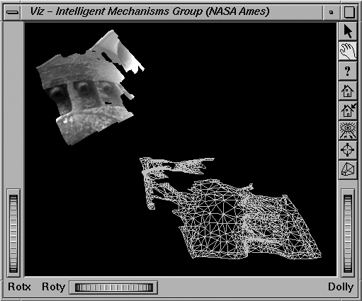
Note: Thanks to Alex for pointing out that this is the Polar Star, not the Healy.
Video switchers bring order to a complicated multiroom system. There
is a Mac Mini below with a 4 port keyspan serial device that lets me
ask for a video source by name and place it on a destination by name.
Forexample, I can ask for the laptop connector to go to lcd5 (one of 5
screens on a wall). This is all documented so that I was able to
execute a change request with a telephone conference and it all worked
on the first try.
But mainly I am using this image as an excuse to try out html5 for the
first time. I just found Kroc Camen's design
post that talks about the figure and legend tags.
Hopefully this will put a legend on the image when you mouse over:
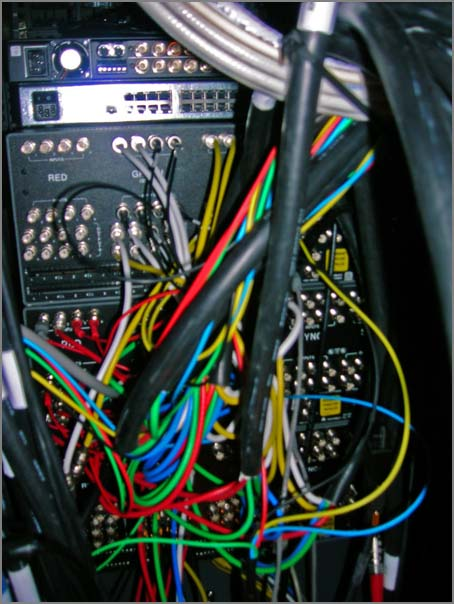
This didn't seem to work. The html:
<figure><legend>3 Extron switches in the Phoenix SOC</legend><img src="../attachments/2008-07/phx-vip-switchers.png"/></figure>
But as a stand alone html5 document, this sort of works, but it is not exactly what I expected.
<?xml version="1.0" encoding="UTF-8"?><html xmlns="http://www.w3.org/1999/xhtml"><head><title>Example document</title></head><body><article><section><figure><legend>3 Extron switches in the Phoenix SOC</legend><img src="../attachments/2008-07/phx-vip-switchers.png"/></figure></section></article></body></html>
Quite the timing. On Monday, I saw mars.arizona.edu on Lori's
computer while she was working in the Visualization and Image
Processing room. The site is a nice updating list of all the Mars
news at the UofA (which has got some volume). There wasn't an news
feed that I could find, so sent the admins of the site a short note.
Turns out that they were already working on it. They sent me a
preview link and have finished setting up a cache system for the RSS
feed to handle the load. Thanks to Scott and Matt:
Many thanks to Miguel Eduardo Gil Biraud for pointing out that my AIS
encoding functions were wrong. I've rewritten the routines and it
looks a lot better. Here is an example of encoding from within python:
Bug reports are always welcome. Now I need to get through another set
of reports and also get commstate and rot working correctly again. I
removed the code for those two features a long time ago and it is time to
bring them back.
Tonight was the big night for the Queen of the Night flower to bloom.
This is a once a year event and very impressive with dry desert
lightning in the distance and candles all along the paths of Tohono
Chul. The local news covered it:
This isn't really the kind of thing that I do, but I am around a lot
of people who are into flow visualization. In a post today by Rob,
he mentioned pyclimate.
This is quite the article. The mission is not ready to release the complete Peter Pan. Not all images have been downloaded. However, James Canvin has done a color mosaic that is in the update.
Monica recently wrote on her blog about picking a programming
language: Perls,
Pythons, and Rs... Here my thoughts on some things to consider
when choosing a programming language (and code libraries too).
The answers to these questions and how to prioritize them will vary
greatly from person to person even within the same group or company.
How is it to program in the language? Is it fun or painful?
How maintainable will the code be?
What platforms will your code be able to work on (Mac, Linux, Windows, etc.)
What are the options for compilers and interpreters?
Will you need a license / $$$ to develop and/or run the code?
How mature is the language? Too new can be trouble
How many people can you get access to discuss issues with? Locally? Via the internet?
What kind of tools support the language? Debuggers, editors, development environment?
Will it perform well enough for the task(s) at hand.
What is the expected lifetime of the project, programming language, and any company that controls it?
Can you or someone you pay get access to the internals?
Can it run without a graphical interface?
Does it support graphical interfaces?
Can it talk to databases, network protocols, and hardware that you require?
Job requirements? (e.g. are you required to use ADA or COBOL?)
Do you have a pre-existing code base? Can you start fresh?
How will this programming language impact your career?
Can you use this programming language for other tasks?
What is the labor pool like? Can you find someone competent to hire
if you need help and can afford it?
Is the source code diff'able? How can you compare two versions of LabView VI's?
Are you up for learning a new language? How soon do you have to be productive?
Can the language interface with your other tools?
I can only answer the above in my own frame of reference and for right
now. A key point is that I have to work with multiple languages
daily!
python is my primary language. It's a low stress, fun language that gets the jobs done
bash/sh gets a lot of use, but I try to default back to python when ever possible
SQL is critical, as putting my data in PostgreSQL/PostGIS keeps me sane
C++ when I have to for speed critical loops and hardware interfaces to write. I try to use it as little as possible
make helps me keep tasks straight
I'm working on my JavaScript/AJAX/JQuery skills as that makes the web go better
XML and XHTML for data organization - Basic HTML knowledge is a must
Why python? That's a tough one to boil down, but here is an unordered overview of my current view:
It's fun/relaxing compared to other languages I know
Expressive and powerful syntax that lets me write fewer lines. Strong but easy to use object-oriented syntax and namespaces
Easy to read and I like the indentation for block structures (I hated the indentation thing for about two days back in 1996)
Lots of easy to use database interfaces that all work the same way
Advanced database interfaces if I need them
For scientific programming, I have access to scipy, scientificpython, gsl (gnu scientific library), R, proj, and matplotlib (plus many more)
Integration with C and C++ is very good. ctypes for easy tasks, swig for big pre-existing libraries, and CPython for total control
Making reusable python packages is easy
Friendly, open community of programmers
Well supported on most OSes and comes with all Macs and most linux distributions
Easier to teach good programming skills than most other languages
Lots of graphical interface libraries
Python scales well to very large programs (my largest to date is 60K lines of code and that is small compared to many other projects)
Python is open source with a liberal license and there are a lot of other python programmers out there
No license file or dongle to fail
Python is not perfect and neither are any of the other programming
languages, but python works very well for me. Remember too that speed
of a system is often more about algorithms and data structures. As
long as you have some way to create more complex data structures (e.g.
with easy access to C/C++), then you can find the areas of code with
speed problems and address it.
Perl vrs Python
I have only one real complaint about python where perl is better. In
perl, replacing some text throughout a file is a simple one liner.
Here I am replacing SGI rgb image files with jpeg images in a bunch
of VRML files:
% perl -pi -e 's|T.rgb|T.jpg|g' *.wrl
How can I do this as a one liner in python?
Footnotes:
Just because you pay for a product, it doesn't necessarily give you any protection or support.
Some more languages that I have used that influced my above comments:
Lisp, m68k assembly, mips assembly, Fortran 77, Basic, ADA, Pascal,
csh/tcsh, Java, TCL, AML, Lex/Flex/Bison/YACC, Matlab, LabView, and
Verilog.
If you know of articles discussing language choice, let me know. Here is one to kick it off:
Why Python? by
ESR [python.org]
I really don't view MS Excel as a proper programming environment even with Visual Basic in the mix. I treat is just as a reporting tool.
...
Australia's Clough Ltd. recently won a contract from Norwegian Advanced Production & Loading (APL) for offshore installation support activities associated with the Neptune liquefied natural gas (LNG) Deepwater Port terminal off the coast of Gloucester, Mass.
.
The work scope covers project management, procurement, logistics and
offshore installation engineering services. Clough's subsea
construction vessel, Normand Clipper will carry out offshore
construction activities including the installation of two submerged
turret loading buoys, associated gas risers, umbilicals, suction
anchors, mooring chains and wire segments.
...
I received a tif image for release that was supposed to have a white
background behind the text. On the desktop, the icon had a white
background but photoshop CS3 had it come up black. Here are the two
views combined:
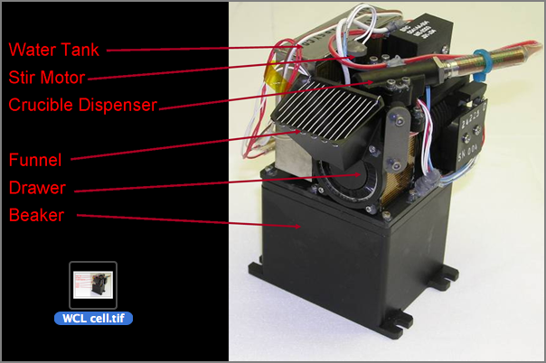
At the time, I wasn't able to check was going on, but looking back, it
appears that the image has an alpha/transparency layer that is not being
followed the same by all tools. First I tried indentify from imagemagick.
This tells me that there is likely some transparency troubles. The Apple Finder
shows nice view that proves the transparency theory.
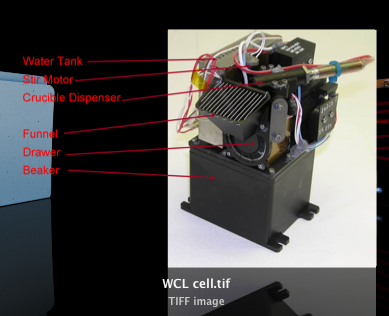
For some reason, this transparency really caused trouble with the upstream tools.
I am not sure why this happened.
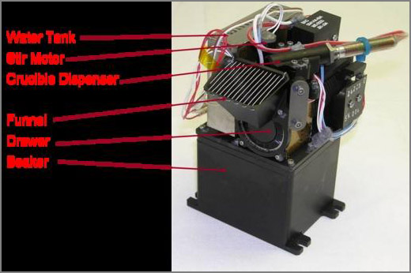
To solve all the issues with this figure, I started over from scratch
with the photograph of the WCL in Photoshop. The background did not
extend far enough to the left to give me a place for my labels. I
cloned and copied the left edge about 5 times. To blend the joins, I
made liberal use of the smudge tool. I then went to the top of the
image and use the eye dropper and paint brush to remove some minor
shadows.
Using this updated background, I brought the image into Illustrator
and added thick lines with no arrows for the location of parts. For
labeling, I used Helvetica and pushed the font size up as high as
possible with the space available. I think this turned out well.
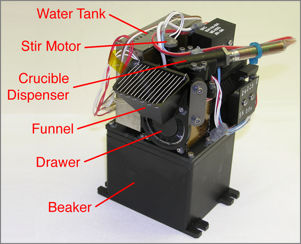
A few thoughts on making instrument figures like this:
Start with the best image you can get
Make sure your final product is a flattened image without transparency
Keep the background simple and uniform to not distract from the object
Use the largest font that you can get away with
Keep your lines short and distinct.
Spread the lines as evenly across the image as possible
Only use arrow heads when you can make them large
Lines should be a fairly heavy stroke and a bold saturated color
Arrange labels in a pleasing manner. Perhaps following a spline